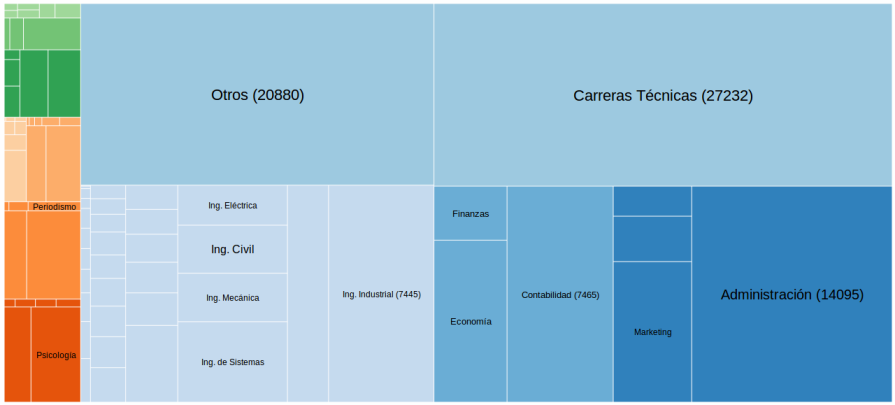

Panorama de la demanda laboral peruana
Entre marzo y agosto del 2014, nuestros algoritmos identificaron
un total de 70 mil avisos de trabajo, en diversas
fuentes de la internet. Este gráfico muestra de forma interactiva
la distribución de avisos por carrera.
